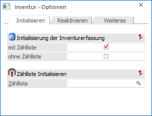
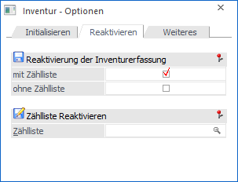
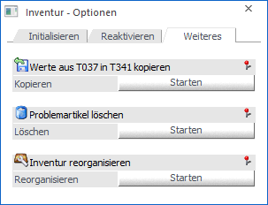

Durch die Anwahl des Buttons "Optionen" im Programm "Inventur" (Register Eingabe) können u.a. nicht gebuchte Inventurerfassungen initialisiert werden. Das Fenster untergliedert sich dabei in 3 Register.
Register "Initialisieren"

Im Register "Initialisieren" können nicht gebuchte Inventurerfassungen initialisiert (d.h. gelöscht) werden.
Ø Initialisieren der Inventurerfassung
An dieser Stelle kann gewählt werden, ob die Erfassungen, welche initialisiert werden sollen, aus einer Zählliste stammen oder nicht.
Ø Zähllisten Initialisieren / Ohne Zählliste Initialisieren
Je nach Einstellung unter "Initialisieren der Inventurerfassung" kann an dieser Stelle der Zeitraum der Initialisierung oder eine Zählliste gewählt werden. Der Start des Vorgangs erfolgt mit Hilfe des Buttons "Ok" bzw. der Taste F5.
Register "Reaktivieren"

Im Register "Reaktivieren" können historisch Inventurerfassungen reaktiviert werden.
Ø Reaktivierung der Inventurerfassung
Nach dem Buchen der Inventur werden die Inventurerfassungen als "gebucht" markiert und stehen als historische Inventurerfassungsdaten zur Verfügung. Um solche Zeilen für eine Bearbeitung zu reaktivieren, muss zunächst ausgewählt werden, ob die Erfassungen mit oder ohne Zählliste erfolgt sind.
Ø Zähllisten Reaktivieren / Ohne Zählliste Reaktivieren
Je nach Einstellung unter "Reaktivierung der Inventurerfassung" kann an dieser Stelle ein "Erfassungen ab / bis Datum" (welcher Zeitraum soll reaktiviert werden) oder eine Zählliste für die Reaktivierung gewählt werden. Der Start des Vorgangs erfolgt mit Hilfe des Buttons "Ok" bzw. der Taste F5.
Hinweis
Eine Reaktivierung ist nur möglich, wenn für die zu reaktivierenden Zeilen nicht bereits neue Erfassungen getätigt wurden. Des Weiteren können nur Zähllisten des Typs "3 - Gebucht" reaktiviert werden.
Register "Weiteres"

In dem Register "Weiteres" stehen weitere Sonderfunktionen der Inventur zur Verfügung.
Ø Werte aus T037 in T341 kopieren
Durch Anwahl des Buttons "Starten" werden die Inventur-Informationen aus der SQL-Tabelle T037 (Artikel Lagereinstellungen) in die Inventurerfassungstabelle geschrieben. Hierbei werden ggfs. bestehende Inventurerfassungszeilen nicht überschrieben, sondern ergänzt.
Achtung
Führen Sie diese Übernahme nur nach Rücksprache mit Ihrem Vertragspartner durch!
Ø Problemartikel löschen
Wurden während des Buchens der Inventur z.B. Artikel gefunden, welche nicht im Artikelstamm vorhanden sind, so werden diese als "Problemartikel" gekennzeichnet. Durch Anwahl des Buttons "Starten" können diese Artikel aus der Inventurerfassungstabelle (T341) gelöscht werden.
Ø Inventur reorganisieren
Bei dem Start der Inventurerfassung mit Zählliste wird zunächst geprüft, ob bereits ein Benutzer mit Hilfe der Zählliste eine Erfassung vornimmt und hierauf ggfs. hingewiesen.
Sollte eine Meldung erscheinen, aber aktiv niemand an der Zählliste arbeiten, so kann der Hinweis durch Anwahl des Buttons "Starten" entfernt werden.
Button
Ø Ok
Abhängig vom gewählten Register wird durch Drücken des Buttons "Ok" bzw. der Taste F5 die Initialisierung oder die Reaktivierung gestartet.
Ø Ende
Bei Anwahl des Buttons "Ende" bzw. der Taste ESC wird das Fenster geschlossen.